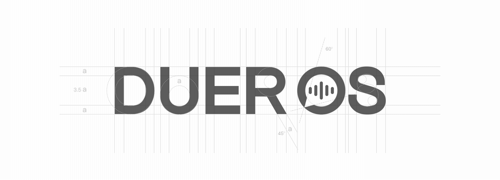

百度度秘事业部于2017年2月成立，它是由原度秘 团队独立升级而成，全面负责百度对话式人工智能操作 系统的DuerOS产品与技术创新，加速对话式人工智能 领域的产品落地，是百度人工智能战略的重要组成部 分。同年6月，度秘事业部在美国硅谷设立研发团队，以 此储备更丰富的技术和资源，让语音交互更好的落地到 场景应用中。目前，百度在中国和美国约有千人规模的团 队在开发人工智能技术。
早在2015年百度世界大会，原度秘团队便打造了深 受用户喜爱的人工智能语音助手度秘App。通过纯口语 化的交互方式，在语义理解基础上，以多轮对话为通路 让用户得到简单、高效、有趣的需求满足。经过1年多的 打磨。在2017年1月的CES展现场，度秘事业部正式推出 首款对话式人工智能操作系统——DuerOS。
DuerOS能让设备具备与人类沟通的能力。搭载Due rOS的设备可让用户以自然语言对话的交互方式，实现 设备控制、情感交流、信息查询、链接服务、日程管理 等10大类目的250多项功能。同时，能借助云端大脑， DuerOS可以不断学习进化，变得越来越“聪明”。可以为 不同行业的合作伙伴赋能，广泛适用于音箱、电视、冰 箱、手机、机器人、车载、可穿戴等多种场景及设备。 同时，度秘事业部还为B端厂商全新打造了语音智能分层 解决方案Turnkey Solution，以适应各类型厂商不同层 次的需求，帮助厂商完成智能化转变。
DuerOS作为一个开放的操作系统，同时发布开放平台 ，搭建语音AI生态体系，支持第三方开发者的能力接入 。目前已与国内外多家企业达成战略合作。借助开放 共赢的合作生态理念，DuerOS未来将更多合作伙伴 的接入，将技术、场景和设备相结合，创造更多可能。
未来，百度度秘事业部将继续在语音智能领域进行深 入探索，以降低企业人工智能转型成本，提升企业效率 。加速产业创新和AI的融合，带动产业升级；为用户创 造更加智能、便捷的生活。